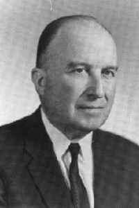
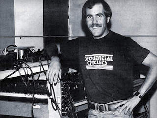

Inventors:
Harry F. Olson
Prior to the RCA Synthesizer, Harry F. Olson was also responsible for the invention of the Microphone, HiFi Loud Speakers, Recording Equipments
Robert Moog started designing and selling 'Theremins' for several years prior to his invention of the Moog Synthesizer.
Robert Moog

Dave Smith
In the mid 70's, Dave Smith was the first to implement a microprocessor, resulting into the first programable synthesizer. The Prophet-5.
In the mid-late 70's, Tom Oberheim designed the first synthesizer capable of playing chords. This was the Oberheim Synthesizer.
Tom Oberheim